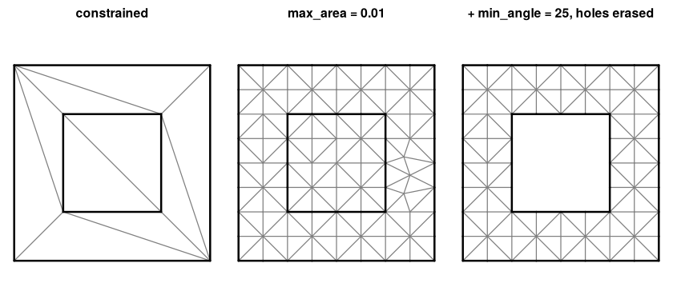
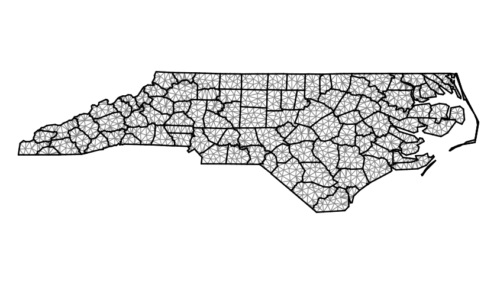

Constrained Delaunay triangulation with refinement for R, binding the header-only CDT library (MPL-2.0). It takes the same input as a planar straight line graph (vertices, segments as index pairs, optional per-vertex attributes) and returns vertices, triangles, and a per-triangle depth that says where each triangle sits relative to the constraints, with no point-in-polygon step.
remotes::install_github("hypertidy/cdtr")The pipeline, on a toy
Vertices and segments in, vertices and triangles out. Here a square with a square hole: two closed rings of segments.
library(cdtr)
x <- c(0, 1, 1, 0, 0.25, 0.75, 0.75, 0.25)
y <- c(0, 0, 1, 1, 0.25, 0.25, 0.75, 0.75)
s0 <- 1:8; s1 <- c(2, 3, 4, 1, 6, 7, 8, 5)
r <- cdt_triangulate(x, y, s0, s1)
str(r[c("P", "T", "S", "depth")])
#> List of 4
#> $ P : num [1:8, 1:2] 0 1 1 0 0.25 0.75 0.75 0.25 0 0 ...
#> $ T : int [1:10, 1:3] 8 6 8 7 6 5 8 6 2 2 ...
#> $ S : int [1:8, 1:2] 1 3 1 5 6 2 7 5 2 4 ...
#> $ depth: int [1:10] 2 1 1 1 2 1 1 1 1 1depth is the number of constraint boundaries crossed on the way in from outside: 0 is outside everything, and for nested rings odd is inside, even is a hole. By default triangles outside the outermost boundary are already dropped (erase = "outer", which is what Triangle’s -p does); erase = "holes" also drops the even depths.
plot_mesh <- function(m, main = "") {
e <- cdt_edges(m)
plot(m$P, asp = 1, axes = FALSE, xlab = "", ylab = "", pch = ".", main = main)
segments(m$P[e[, 1], 1], m$P[e[, 1], 2], m$P[e[, 2], 1], m$P[e[, 2], 2], col = "grey50")
segments(m$P[m$S[, 1], 1], m$P[m$S[, 1], 2], m$P[m$S[, 2], 1], m$P[m$S[, 2], 2], lwd = 2)
}
op <- par(mfrow = c(1, 3), mar = c(0.5, 0.5, 2, 0.5))
plot_mesh(r, "constrained")
plot_mesh(cdt_triangulate(x, y, s0, s1, max_area = 0.01), "max_area = 0.01")
plot_mesh(cdt_triangulate(x, y, s0, s1, max_area = 0.01, min_angle = 25, erase = "holes"),
"+ min_angle = 25, holes erased")
par(op)Refinement reports what it could not do
Ruppert refinement cannot always meet the bound (two constraints meeting at a sharp angle, say). Rather than silently stopping, the result carries the counts.
r2 <- cdt_triangulate(x, y, s0, s1, max_area = 0.01, min_angle = 25)
r2$unrefined
#> criterion shortEdgeTriangles circumcenterOutside circumcenterOnVertex
#> 1 area 0 0 0
#> 2 angle 0 0 0
#> sharpFixedCorner shortEdges splitVertexInvalid
#> 1 0 0 0
#> 2 0 0 0
r2$min_edge_length
#> [1] 0.025min_edge_length is the floor below which the refiner gives up on an edge; by default it is derived from the input (a fraction of the median segment length, capped by the area target) so refinement does not cascade into sharp input corners. Pass 0 for never-give-up.
Real polygons
Any polygon source reduces to the same two tables. With sf’s North Carolina counties, rings become vertex runs and consecutive index pairs; shared boundaries dedupe to one segment.
nc <- sf::st_read(system.file("shape/nc.shp", package = "sf"), quiet = TRUE)
rings <- unlist(lapply(sf::st_geometry(nc), function(g) lapply(unclass(g), `[[`, 1)), recursive = FALSE)
xy <- do.call(rbind, lapply(rings, function(m) m[-nrow(m), ]))
n <- vapply(rings, function(m) nrow(m) - 1L, 1L)
start <- rep(cumsum(c(0L, n[-length(n)])), n)
s0 <- seq_along(xy[, 1])
s1 <- start + (s0 - start) %% rep(n, n) + 1L
m <- cdt_triangulate(xy[, 1], xy[, 2], s0, s1, max_area = 0.01)
table(m$depth)
#>
#> 1 3 5
#> 2100 1119 521
op <- par(mar = rep(0, 4))
plot_mesh(m)
par(op)The counties tile the state, so there are no holes, but a county two boundaries in from the coast has depth 3, and so on: depth is the peel layer, a count of constraint crossings from outside, not an inside/outside flag in general. It is computed topologically from the mesh alone, before anything is erased, which makes it a cheap first cut for classifying triangles by region: nested rings get odd/even, a coverage gets a boundary-distance ordering, and only ties within a layer need a geometric lookup.
Attributes ride along
Per-vertex values (an elevation, a time) are carried onto the new Steiner vertices by linear interpolation from the input mesh, the way Triangle’s PA works.
z <- 2 * xy[, 1] + 3 * xy[, 2]
ma <- cdt_triangulate_attr(xy[, 1], xy[, 2], s0, s1, PA = cbind(z = z), max_area = 0.01)
range(ma$PA[, "z"] - (2 * ma$P[, 1] + 3 * ma$P[, 2]))
#> [1] -1.421085e-14 1.421085e-14What this is for
cdtr is the triangulation primitive for the hypertidy mesh packages, where it replaces RTriangle (Shewchuk’s Triangle, non-commercial licence). The inst/benchmarks/ scripts compare the two on anglr’s Tasmanian contour and cadastre data; the short version is that constrained-only output is identical, refinement honours max_area where Triangle may give up, and Triangle’s refiner is faster per Steiner point.